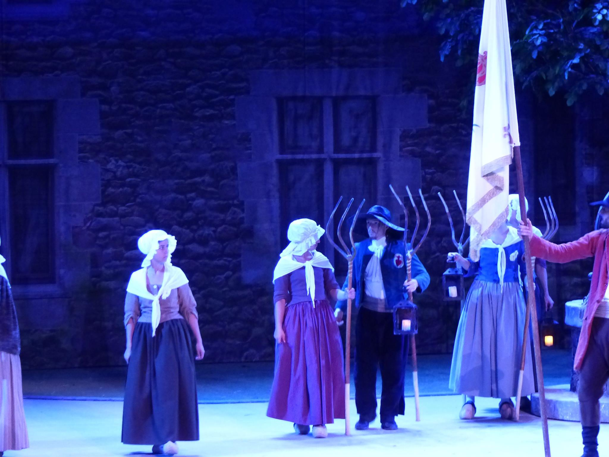
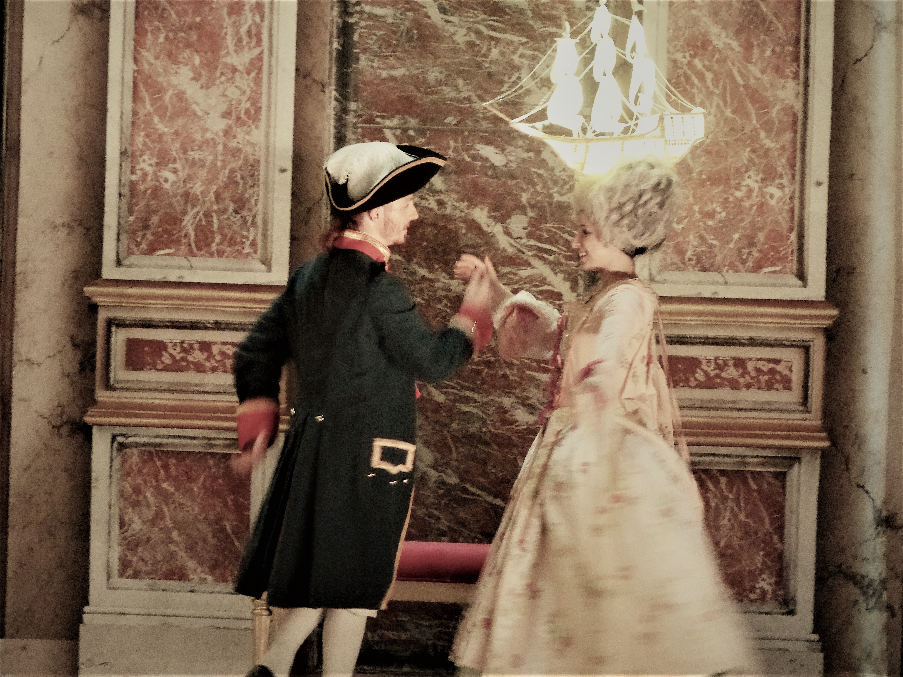
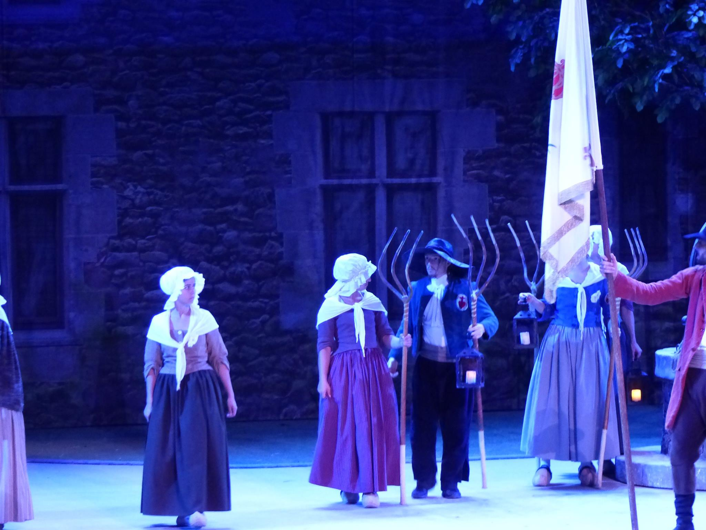
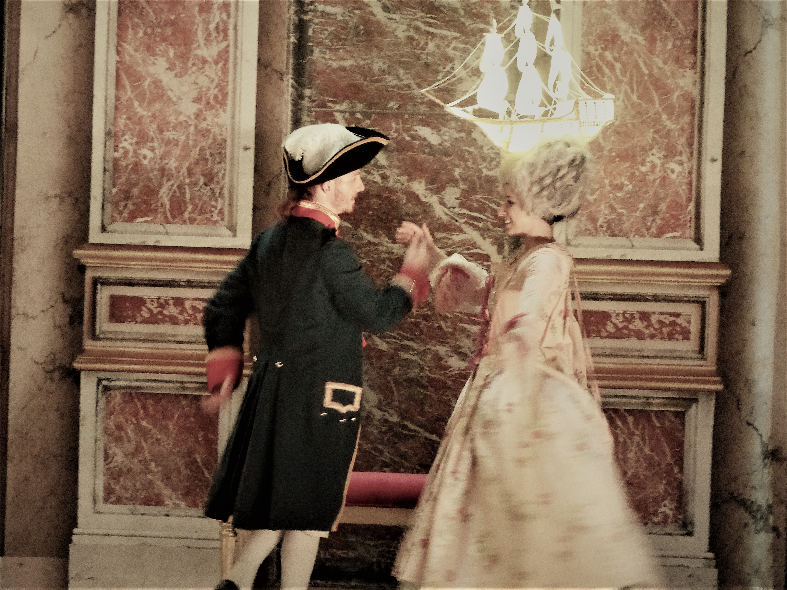

Créations !
Jongleur de feu depuis l'âge de 16 ans, je suis spécialisé dans les bâtons du diable. En 2022, j'ai créé mon premier spectacle de "Contes enflammés" en solo. Mêlant jonglage de feu, danse et théatre, ces spectacles me permettent de mettre la performance au service d'histoires originales contées en live.
Billy la Corneille
Quand le capitaine s'absente, les matelots se rêvent aux commandes... Adieu les tâches ingrates, qui éraflent les genoux et bloquent le dos, bonjour les banquets et le lit douillet! Mais une fois le convoité manteau enfilé viennent les vraies questions: quel genre de capitaine seriez vous ? Sanguinaire ou distingué ? Serviable ou tyrannique? Le poids de ce manteau n'est peut-être pas seulement celui du tissu...
Le Passeur
Humphrey le bûcheron est un voisin des plus serviables. Aussi, quand une vieille dame lui demande, en pleine tempête nocturne, d'aller lui chercher du bois, il n'hésite pas une seconde. Sans s'en rendre compte, Humphrey s'engage sur le plus long des voyages.
Le Puy du Fou
Le Mime et l'Etoile
J'ai eu l'opportunité de participer à la création du spectacle "Le Mime et l'Etoile" au Puy du Fou. Une aventure inoubliable sur une scène unique au monde, qui m'a permis de faire des claquettes, du violon sur la lune et des sauts de 8m de haut devant une tribune de 2000 personnes!
Le Dernier Panache
 



Participer à un spectacle du Puy du Fou l'année de sa création... Pas mal comme job étudiant ? J'ai ainsi intégré les équipes du Grand parc pour les saisons 2016 et 2017 du spectacle "Le Dernier Panache". Valse, cascades, chute de 12 mètres en QuickJump, combat au sabre... Deux étés très riches en apprentissages!